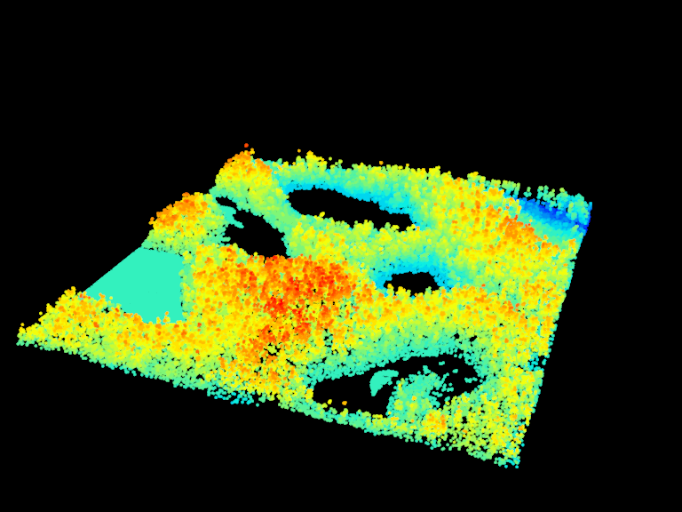
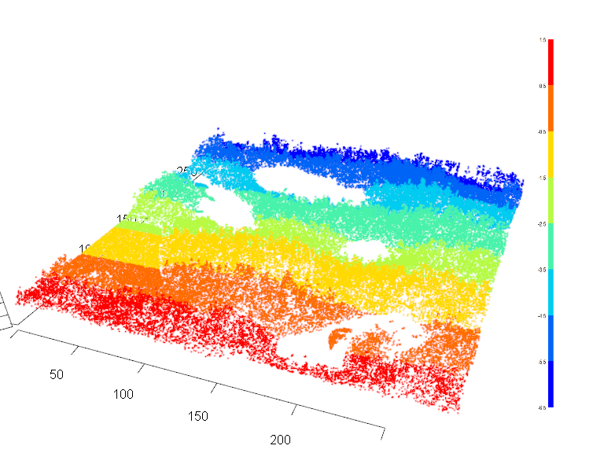
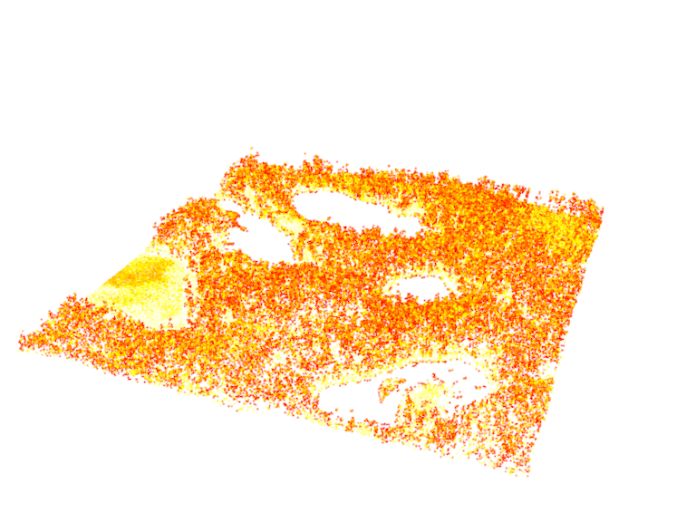
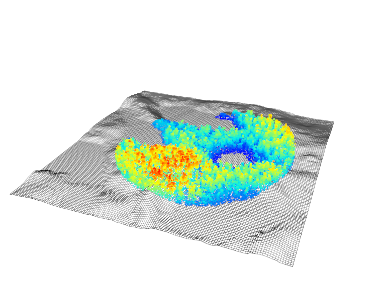
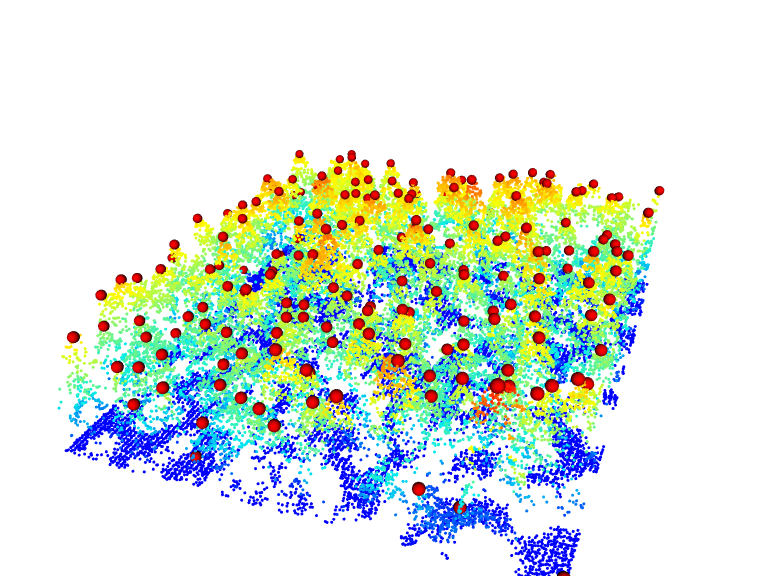
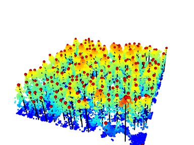
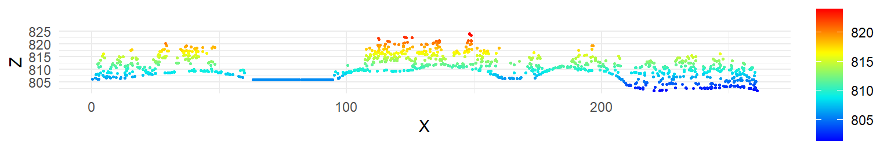

2 Reading, Plotting, Querying & Validating
2.1 Reading LiDAR data using readLAS
Discrete return ALS sensors record a number of pieces of data. First and foremost, positional data in three dimensions (X,Y,Z), followed by additional information like the intensity for each point, the position of each point in the return sequence, or the beam incidence angle of each point. Reading, writing, and efficient storage of these ALS data is a critical step prior to any subsequent analysis.
ALS data is most commonly distributed in LAS format, which is specifically designed to store ALS data in a standardized way. These data are officially documented and maintained by the American Society for Photogrammetry & Remote Sensing (ASPRS). LAS files do however require a large amount of memory because they are not compressed. The LAZ format has become the standard compression scheme, because it is free and open-source.
The widespread use, standardization and open source nature of the LAS and LAZ formats promoted the development of the lidR package, which has been designed to process LAS and LAZ files both as input and output, taking advantage of the LASlib and LASzip C++ libraries via the rlas package.
The function readLAS() reads a LAS or LAZ file and returns an object of class LAS. The LAS formal class is documented in depth in a dedicated vignette. To briefly summarize, a LAS file is made of two parts:
- The header that stores summary information about its content including the bounding box of the file, coordinate reference system, and point format.
- The payload - i.e. the point cloud itself.
The function readLAS() reads and creates an object that contains both the header and the payload.
las <- readLAS("files.las")When printed it displays a summary of its content.
print(las)
#> class : LAS (v1.2 format 1)
#> memory : 4.4 Mb
#> extent : 684766.4, 684993.3, 5017773, 5018007 (xmin, xmax, ymin, ymax)
#> coord. ref. : NAD83 / UTM zone 17N
#> area : 51572 m²
#> points : 81.6 thousand points
#> density : 1.58 points/m²
#> density : 1.08 pulses/m²For a more in-depth print out of the data use the function summary() instead of print().
2.1.1 Parameter select
A LAS file stores the X Y Z coordinates of each point as well as many other data such as intensity, incidence angle, and return sequence position. We call these data attributes. In pratice many attributes are not actually useful but they are loaded anyway by default. This can take up a lot of processing memory because R is a language that does not allow for choosing data storage modes (see this vignette for more details).
To save memory, readLAS() can take an optional parameter select which enables the user to selectively load the attributes of interest. For example, one can choose to load only the X Y Z attributes.
las <- readLAS("file.las", select = "xyz") # load XYZ only
las <- readLAS("file.las", select = "xyzi") # load XYZ and intensity onlyExamples of other attribute abbreviations are: t - gpstime, a - scan angle, n - number of returns, r - return number, c - classification, s - synthetic flag, k - keypoint flag, w - withheld flag, o - overlap flag (format 6+), u - user data, p - point source ID, e - edge of flight line flag, d - direction of scan flag
2.1.2 Parameter filter
While select enables the user to select “columns” (or attributes) while reading files, filter allows selection of “rows” (or points) while reading. Removing superfluous data at reading time saves memory and increases computation speed. For example, it’s common practice in forestry to process using first returns.
las <- readLAS("file.las", filter = "-keep_first") # Read only first returnsIt is important to understand that the option filter in readLAS() keeps or discards point at read time i.e. while reading at the C++ level without implying any R code. For example the R function to filter points of interest (POI) is filter_poi() may return the exact same output as the filter option in readLAS():
las1 <- readLAS("file.las", filter = "-keep_first")
las2 <- readLAS("file.las")
las2 <- filter_poi(las2, ReturnNumber == 1L)In the above example we are (1) reading only the first returns or (2) Reading all the points then filtering the first returns in R. Both outputs are strictly identical but the first one is faster and more memory efficient because it doesn’t load the whole file in R and does not use extra processing memory. It should always be preferred when possible. Multiple filter commands can be used at once to e.g. read only first return between 5 and 50 m.
las <- readLAS("file.las", filter = "-keep_first -drop_z_below 5 -drop_z_above 50")The full list of available commands is given by readLAS(filter = "-help"). Users of LAStools may recognize these commands because both LAStools and lidR use the same library (LASlib and LASzip) to read and write LAS and LAZ files.
2.2 Validating lidar data
An important first step in ALS data processing is ensuring that your data is complete and valid according to the ASPRS LAS specifications. Users commonly report bugs arising from invalid data. This is why we introduced the las_check() function to perform a deep inspection of LAS objects. This function checks if a LAS object meets the ASPRS LAS specifications and whether it is valid for processing, giving warnings if otherwise.
A simple example that happens fairly often is that a LAS file contains duplicate points. This may lead to problems like trees being detected twice, to invalid metrics, or to errors in DTM generation. We can also encounter invalid return numbers, incoherent return numbers and number of returns attributes, invalid coordinate reference system etc. Always make sure to run the las_check() function before digging deep into your data.
las_check(las)#>
#> Checking the data
#> - Checking coordinates... ✓
#> - Checking coordinates type... ✓
#> - Checking coordinates range... ✓
#> - Checking coordinates quantization... ✓
#> - Checking attributes type... ✓
#> - Checking ReturnNumber validity...
#> ⚠ Invalid data: 1 points with a return number equal to 0 found.
#> - Checking NumberOfReturns validity... ✓
#> - Checking ReturnNumber vs. NumberOfReturns... ✓
#> - Checking RGB validity... ✓
#> - Checking absence of NAs... ✓
#> - Checking duplicated points...
#> ⚠ 1 points are duplicated and share XYZ coordinates with other points
#> - Checking degenerated ground points...
#> ⚠ There were 1 degenerated ground points. Some X Y Z coordinates were repeated
#> - Checking attribute population...
#> 🛈 'PointSourceID' attribute is not populated
#> 🛈 'EdgeOfFlightline' attribute is not populated
#> - Checking gpstime incoherances ✓
#> - Checking flag attributes... ✓
#> - Checking user data attribute... ✓
#> Checking the header
#> - Checking header completeness... ✓
#> - Checking scale factor validity... ✓
#> - Checking point data format ID validity... ✓
#> - Checking extra bytes attributes validity... ✓
#> - Checking the bounding box validity... ✓
#> - Checking coordinate reference system... ✓
#> Checking header vs data adequacy
#> - Checking attributes vs. point format... ✓
#> - Checking header bbox vs. actual content... ✓
#> - Checking header number of points vs. actual content... ✓
#> - Checking header return number vs. actual content...
#> ⚠ Invalid file: the header states the file contains 55756 returns numbered '1' but 55755 were found.
#> Checking coordinate reference system...
#> - Checking if the CRS was understood by R... ✓
#> Checking preprocessing already done
#> - Checking ground classification... yes
#> - Checking normalization... yes
#> - Checking negative outliers... ✓
#> - Checking flightline classification... no
#> Checking compression
#> - Checking attribute compression...
#> - EdgeOfFlightline is compressed
#> - Synthetic_flag is compressed
#> - Keypoint_flag is compressed
#> - Withheld_flag is compressed
#> - UserData is compressed
#> - PointSourceID is compressed
A check is performed at read time regardless, but the read time check is not as thorough as las_check() for computation time reasons. For example duplicated points are not checked at read time.
las <- readLAS("data/chap1/corrupted.laz")
#> Warning: Invalid data: 174638 points with a 'return number' greater than the
#> 'number of returns'.2.3 Plotting
The lidR package takes advantage of the rgl package to provide a versatile and interactive 3D viewer with points coloured by Z coordinates on a black background as default.
2.3.1 Basic 3D rendering
The very basic way to render a point cloud is the function plot().
plot(las)
Users can change the attributes used for coloring by providing the name of the attribute used to colorize the points. The background color of the viewer can also be changed by assigning a color using the bg argument. Axes can also be added and point sizes can be changed.
# Plot las object by scan angle,
# make the background white,
# display XYZ axis and scale colors
plot(las, color = "ScanAngleRank", bg = "white", axis = TRUE, legend = TRUE)
Note that if your file contains RGB data the string "RGB" is supported:
plot(las, color ="RGB")The argument breaks enables to defined more adequate breaks in the color palette for example when intensity contains large outliers. Otherwise the palette range would be too large and most of the values would be considered as “very low”, so everything would appear in the same color.
plot(las, color = "Intensity", breaks = "quantile", bg = "white")
2.3.2 Overlays
The package also provides some easy to use functions for common overlay. For example add_dtm3d() to add a digital terrain model (section 4) and add_treetops3d() to visualize the output of an individual tree detection (section 7.1)
x <- plot(las, bg = "white", size = 3)
add_dtm3d(x, dtm)
x <- plot(las, bg = "white", size = 3)
add_treetops3d(x, ttops)
It is also possible to combine two point clouds with different colour palettes. In the following example we are using a previously classified point cloud. We first separate the vegetation and non vegetation points using filter_poi() and then plot both on top of each other with different colour schemes using add options in plot()
nonveg <- filter_poi(las, Classification != LASHIGHVEGETATION)
veg <- filter_poi(las, Classification == LASHIGHVEGETATION)
x <- plot(nonveg, color = "Classification", bg = "white", size = 3)
plot(veg, add = x)
2.3.3 Advanced 3D rendering
With lidR being based on rgl it is easy to add objects in the main rendering using rgl functions such as rgl::point3d(), rgl::text(), rgl::surface3d() and so on to produce publication ready rendering. However lidR introduced an additional challenge because it does not display the points with their actual coordinates. The points are shifted to be rendered close to (0, 0) (a matter of accuracy because rgl uses float (decimal numbers on 32 bits) instead of double (decimal numbers on 64 bits)). When plot() is used it invisibly returns the shift values that can be used later to realign other objects.
offsets <- plot(las)
print(offsets)
#> [1] 391867.8 3901019.3The coordinates of the objects must be corrected to align with the point cloud. In the following we will add lines to render the trunks. We read a file, we locate the trees (see section 7.1), we extract the coordinates and sizes of the trees and plot lines with rgl::segment3d().
LASfile <- system.file("extdata", "MixedConifer.laz", package="lidR")
las <- readLAS(LASfile, select = "xyzc")
# get the location of the trees
ttops <- locate_trees(las, lmf(ws = 5))
# plot the point cloud
offsets <- plot(las, bg = "white", size = 3)
add_treetops3d(offsets, ttops)
# extract the coordinates of the trees and
# apply the shift to display the lines
# in the rendering coordinate system
x <- sf::st_coordinates(ttops)[,1] - offsets[1]
y <- sf::st_coordinates(ttops)[,2] - offsets[2]
z <- ttops$Z
# Build a GL_LINES matrix for fast rendering
x <- rep(x, each = 2)
y <- rep(y, each = 2)
tmp <- numeric(2*length(z))
tmp[2*1:length(z)] <- z
z <- tmp
M <- cbind(x,y,z)
# Display lines
rgl::segments3d(M, col = "black", lwd = 2)../../../../../../tmp/Rtmpjse8Mj/file86ca323bbb4cb.png
2.3.4 Voxel rendering
It is possible to render voxels. This is useful to render the output of the function voxelise_points() or voxel_metrics() for examples.
vox <- voxelize_points(las, 6)
plot(vox, voxel = TRUE, bg = "white")
2.3.5 Cross sections 2D rendering
To better visualize the vertical structure of a point cloud, investigate classification results, or compare results of different interpolation routines, a cross section can be plotted. To do that we first need to decide where the cross section is located (i.e. define the beginning and the end) and specify it’s width. The point cloud can then be clipped and the X and Z coordinates used to create the plot.
For example, to create a 100 m long cross section we may define the beginning and the end and then use clip_transect() function to subset the point cloud.
p1 <- c(273357, 5274357)
p2 <- c(273542, 5274542)
las_tr <- clip_transect(las, p1, p2, width = 4, xz = TRUE)Rendering can be achieved with base plot or ggplot2. Notice the use of @data to extract the data.frame from the LAS object.
library(ggplot2)
ggplot(las_tr@data, aes(X,Z, color = Z)) +
geom_point(size = 0.5) +
coord_equal() +
theme_minimal() +
scale_color_gradientn(colours = height.colors(50))
The two steps required to create a cross section (clipping the point cloud and plotting) can be combined. Below we create a simple function that will become handy at multiple occasions throughout this book. To make this function even easier to use we will specify the default values for p1 and p2 so that the cross section is located in the centre of the point cloud, along the X-axis. The default width will be 4 m.
plot_crossection <- function(las,
p1 = c(min(las@data$X), mean(las@data$Y)),
p2 = c(max(las@data$X), mean(las@data$Y)),
width = 4, colour_by = NULL)
{
colour_by <- rlang::enquo(colour_by)
data_clip <- clip_transect(las, p1, p2, width)
p <- ggplot(data_clip@data, aes(X,Z)) + geom_point(size = 0.5) + coord_equal() + theme_minimal()
if (!is.null(colour_by))
p <- p + aes(color = !!colour_by) + labs(color = "")
return(p)
}Then we can used the function:
plot_crossection(las, colour_by = factor(Classification))